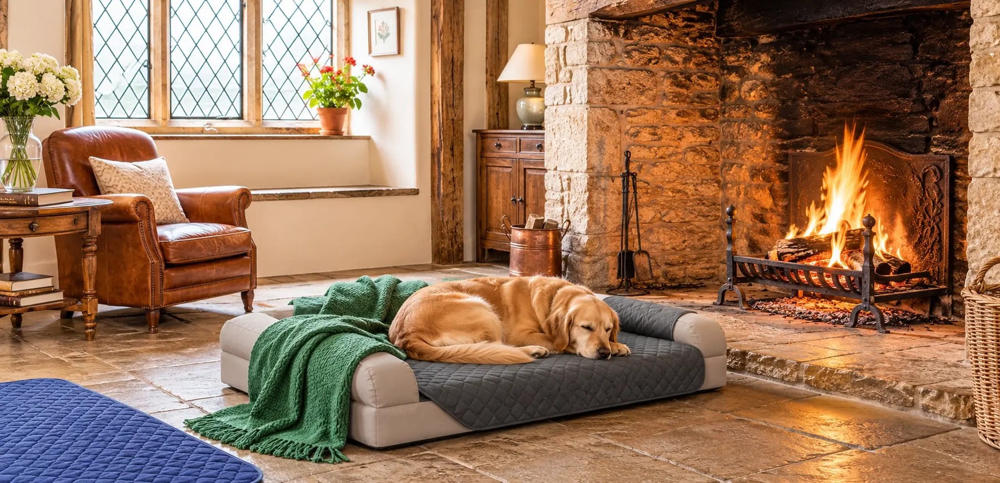
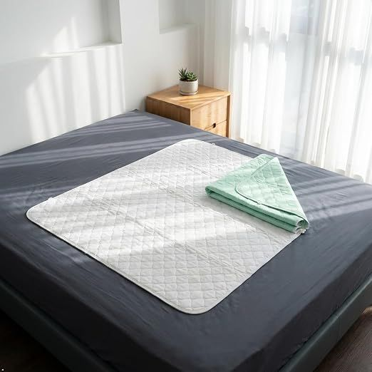

A dry spot for every paw
Puppies in training, senior dogs, cats after surgery: pets need a clean, dry place, and their owners need floors, crates and sofas that stay clean. VELCURA washable pet pads are built for claws, chewing and daily washing.

5Everything about pet pads
 56
56Puppy training
How pads fit into house-training, step by step, and the build that survives it.
Explore
47Senior & recovering pets
Incontinence, mobility and recovery after surgery: what owners face and how pads help.
Explore 6
6Crates, sofas & cars
Crate-size chart, sofa and bed protection, car trunks and litter areas.
Explore 13
13Paw Guard specifications
Fabrics, sizes, colours and the tests behind claw and slip claims.
Explore 36
36Washing pet pads
Removing urine odour, wash routine and when to call the vet.
Explore 46
46Pet pad market
Market size, pet populations in the US, Europe and Japan, and retail signals.
ExploreWashable vs disposable pee pads
| Factor | Disposable pee pad | VELCURA washable pet pad |
|---|---|---|
| Shredding | Paper and fluff tear easily | Tight polyester knit, double-stitched binding |
| Slipping | Slides on tiles and wooden floors | Silicone anti-slip dots |
| Size | Commonly about 22 × 23 in | 18 × 24 in up to 36 × 60 in, crate-matched sizes to order |
| Leaks at the edges | Once saturated, liquid runs off | TPU barrier across the whole pad |
| Waste | One pad per accident, into the bin | Rated for 300 washes |
What pet owners complain about
Review roundups of washable pee pads keep returning to the same few problems. Each maps to a build decision.
| Frequent complaint | VELCURA response |
|---|---|
| "My puppy chewed through it" | Tight knit top, no loose tags, double-stitched binding; supervise young puppies |
| "Takes forever to dry" | Polyester knit top, core weight matched to the use, so pads dry faster |
| "Shrank after the first wash" | Pre-shrunk fabrics, ≤ 3% dimensional change target |
| "Not waterproof" | Laminated TPU, hydrostatic test after 50 / 100 / 300 washes |
| "Still smells after washing" | Cold rinse first, enzyme additive, no fabric softener; see our washing guide |
| "Slides across the floor" | Silicone-dot backing as standard on Paw Guard |
Pet owners often ask
Will puppies chew a washable pad?
Some will. Any textile can be chewed, so the Paw Guard top uses a tight polyester knit with no loose fibres or tags, and the binding is double-stitched. Supervise young puppies, and remove a pad if it has been chewed through.
Do washable pads attract puppies like scented disposable pads?
Our standard pads are unscented. Pad training works through routine: the same spot, at the same times, with praise straight away. Attractant treatments can be added for a brand, but only with test data behind the claim.
How many pads does one pet need?
For daily use, plan on three or four: one down, one in the wash and one or two dry spares. Washing every 24 hours keeps odour under control.
Can they be used for cats?
Yes. Small pads around the litter box catch scatter and misses, and larger pads protect beds and sofas for senior cats.
6Launching a pet pad line?
Tell us your channel, sizes and target price. We reply with a Paw Guard spec sheet and price ladder within one business day.